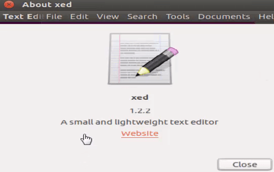
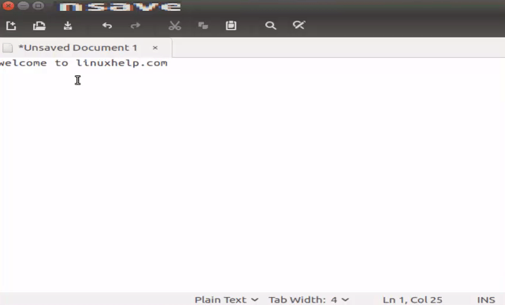

LINUX FORMAT
Xed
При правильной
настройке Xed
может послужить
достойной IDE.
Версия: 1.8.3
Сайт: https://github.com/linuxmint/xed
ы часто слышим мнения о текущем состоянии стека
программ GTK3. Например, что Gnome Shell или
Pantheon из Elementary зашли слишком далеко, упро-
щаясь ради элегантности, так что средний пользователь иной раз
остается в своих любимых программах без ряда ключевых функ-
ций. Проект Mint Linux предлагает, пожалуй, лучшие решения
для опытных пользователей, желающих оставаться в экосистеме
GTK3. Отличным примером является Xed, мощный текстовый
редактор — достаточно хороший, чтобы заменить Gedit, Pluma
или Code.
Мощь Xed раскрывается, как только вы начинаете работать
сразу с несколькими текстовыми файлами, когда вам надо ори-
ентироваться, писать код, исправлять опечатки и анализировать
синтаксис языков программирования.
Меню View [Вид] — это начальная точка, где можно включить
некоторые из расширенных функций Xed. Редактор может ото-
бражать боковую панель с двумя вкладками внутри: одна для на-
вигации между открытыми файлами, а другая — со встроенным
деревом менеджера файлов. Даже если эта панель отключена,
все же достаточно просто перейти от одного файла к другому
с помощью вкладок. Функция Overview map [Обзор] отображает
отдаленный вид вашего документа и способствует навигации
М
www.linuxformat.ru/subscribe
по длинным файлам, тогда как в меню Tools [Инструменты] хра-
нятся параметры проверки орфографии и статистика документов.
Мы думали, что этих возможностей уже достаточно, чтобы
назвать Xed продвинутым редактором, но в Edit > Preferences
[Править > Параметры] выяснилось, что предложений и того
больше. Xed можно расширить плагинами — некоторые из них
установлены, но по умолчанию не активированы. Например, при-
ложение может автоматически сохранять документы, предлагать
завершение слова и выделять почти любую разметку и язык.
Предпросмотр печати, сравнение файлов, преобразование реги-
стра, вставка даты/времени... сложно и упомнить все функции
программы. Если вы не совсем довольны своим текстовым редак-
тором в Gnome или другом окружении на GTK3, мы настоятельно
рекомендуем перейти на Xed. |
=======================================
How to install Xed Editor on Ubuntu 16.04
How to install Xed Editor on Ubuntu 16.04
Xed (XML text EDitor) is a simple text editor with more features than the average editor. It features support for UTF-8 to encode edited files, auto indentation, syntax highlighting, printing, and file comparison among others. Xed also contains the extensible using plugins and also with preinstalled plugins to help users edit files quicker and more easily. This tutorial explains the installation procedure of Xed editor on Ubuntu.
Features
Installation procedure
To start the installation procedure, add the xed package into repository via ppa.
root@linuxhelp1:~# add-apt-repository ppa:embrosyn/xapps
Press [ENTER] to continue or ctrl-c to cancel adding it
.
.
.
gpg: /tmp/tmpc6wgqd79/trustdb.gpg: trustdb created
gpg: key 66DFE684: public key " Launchpad PPA for embrosyn" imported
gpg: Total number processed: 1
gpg: imported: 1 (RSA: 1)
OK
The repository is added successfully. Now update the machine by updating the apt-get update command.
root@linuxhelp1:~# apt-get update
Hit:1 http://security.ubuntu.com/ubuntu xenial-security InRelease
Hit:2 http://in.archive.ubuntu.com/ubuntu xenial InRelease
Hit:3 http://ppa.launchpad.net/embrosyn/xapps/ubuntu xenial InRelease
Hit:4 http://in.archive.ubuntu.com/ubuntu xenial-updates InRelease
Hit:5 http://in.archive.ubuntu.com/ubuntu xenial-backports InRelease
Reading package lists... Done
The target system is updated successfully. Install the xed editor by executing the following command.
root@linuxhelp1:~# apt-get install xed
Reading package lists... Done
Building dependency tree
Reading state information... Done
The following additional packages will be installed:
xed-common
The following NEW packages will be installed:
xed xed-common
.
.
.
Processing triggers for mime-support (3.59ubuntu1) ...
Processing triggers for man-db (2.7.5-1) ...
Setting up xed-common (1.2.2-1~xenial0) ...
Setting up xed (1.2.2-1~xenial0) ...
The package is installed successfully, To launch the xed package from Ubuntu dashboard, type the application name and click to run the application.

Now edit the text documents or manage the source codes by using Xed editor.

Wasn' t that an easy installation procedure? Xed editor includes printing and print preview support.
Tags:
Author:
Comments ( 0 )
No comments available
Frequently asked questions ( 5 )
Q
what command to remove xed editor?
A
use the following command to remove xed editor # apt-get remove xed -y
Q
is there any alternative like xed?
A
alternative like xed are
Sublime Text. ...
Visual Studio Code. ...
Vim. ...
Brackets
Is there any another installation method xed editor?
A
For other Linux distributions, you can clone and install it from source as shown:
$ git clone https://github.com/linuxmint/xed.git
/> $ cd xed/
$ ./autogen.sh
$ make
$ sudo make install
Q
what are all the features of xed editor?
A
features of xed editor are,
Complete support for UTF-8 text
Syntax highlighting
Support for editing remote files
Search and Replace
Printing and Print Previewing Support
Q
where to add the repo of xed editor in ubuntu?
A
add the xed package into repository through ppa
# add-apt-repository ppa:embrosyn/xapps
Related Tutorials in How to install Xed Editor on Ubuntu 16.04
How to install and update OpenSSL on Ubuntu 16.04
How to install Etcher Image Editor on Ubuntu 18.04
How to remove MySQL package completely on Ubuntu 16.04
How to install Android emulator in Ubuntu 16.04
How to install Genymotion 2.12.1 on Ubuntu 18.04
How to install Atom Editor on CentOS 7
How to install Meld tool in Ubuntu
How To Install AnyDesk on Ubuntu 16.04
Related Forums in How to install Xed Editor on Ubuntu 16.04
lsb_release command not working : Debian
clnt_create: RPC: Program not registered
How to uninstall postgresql from ubuntu
what is the location of the ifconfig program on your machine?
/etc/apt/sources.list Permission denied
Unable to locate package gitlab-ce in ubuntu
Adminer Not Found
Vim editor : find and replace
Related News in How to install Xed Editor on Ubuntu 16.04
How To Install Mixxx on Ubuntu 16.04
Ubuntu Core now available on i.MX6 based TS-4900 thanks to Technologic Systems Inc.
Ubuntu 17.10 Artful Aardvark Beta 1 is now here. Download Now
What’s next for Ubuntu Linux Desktop?
Ubuntu 17.04 released with greater expectations
Ubuntu Unity is no more: One Linux dream has been axed
Back To Top!
How to pass and get variables to user account from root account using shell script
Is it possible to pass the variables to user account through root account, using shell script...? i tried lot. when i try to get the user variable values using " echo" command. i get only empty space. please help me to solve this problem....